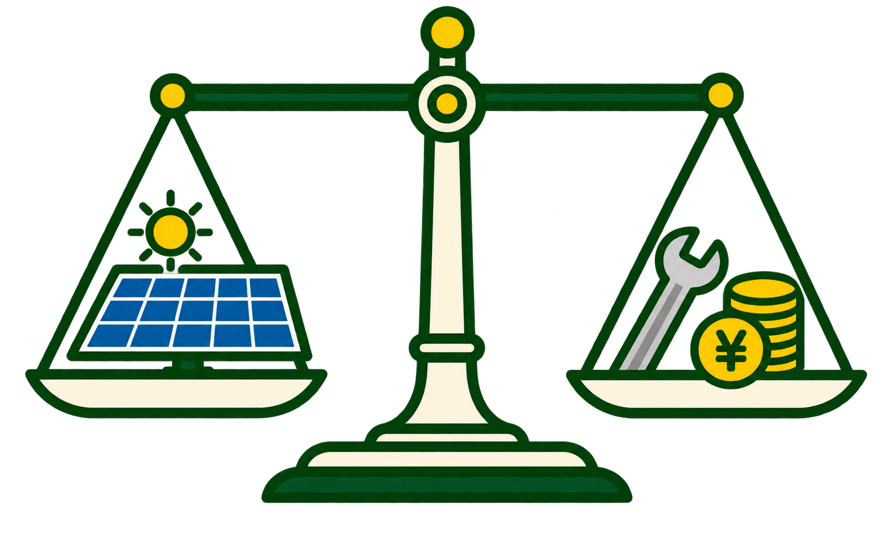

太陽光のかんたん採算診断
太陽光，結局いくらトク？
見積もりを取る前に，あなたの場合の20年間の損得を確認．
- 登録不要
- 氏名・住所の入力なし
- 診断も見積もりも無料

太陽光のかんたん採算診断
はれトク診断
20年間の採算を，まずは概算します．
- 01条件を入力都道府県と市区町村を選択．登録や氏名・住所の入力は不要です．
- 02いくらトクか試算20年間の収支を表示．条件変更，内訳・根拠も確認できます．
- 03なっトクしたら，実際の費用を確認屋根・施工条件と利用できる補助金を踏まえた無料見積もりへ進めます．
はれトクガイド
知って，なっトク．
太陽光の収支，補助金，見積もり．気になるところから，さっと確認できます．
データ状態
公開データを確認しています．